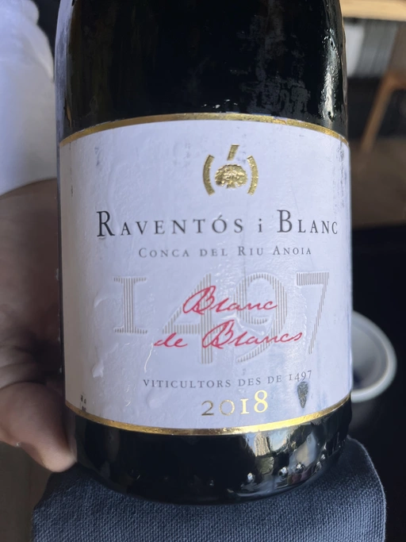

- Type
- White Sparkling, Extra brut
- Producer
- Raventós i Blanc
- Vintage
- 2018
- Location
- Spain, Vino de Mesa
- Grapes
- Xarel-lo, Macabeo, Parellada, Malvasía de Sitges
- Alcohol
- 12
- Sugar
- NA
- Price
- 1700 UAH
- Cellar
- N/A
Ratings
2022-05-29 - 7.75
Conca del Riu Anoia is one more step out of big Cava DO. And it has all the rights to, because it also steps out with it delicate and precise profile. Intriguing nose with citrus, minerals and stone fruits. Focused, yet creamy palate with flavours of honeysuckle, cream and pear. Aftertaste is long and evolving. It’s also interesting that aside from common grapes for this region they are also using Malvasía de Sitges.